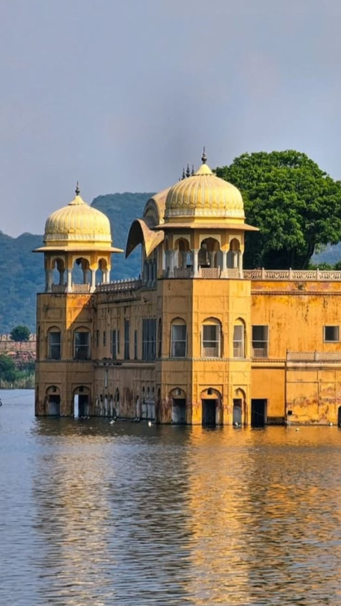
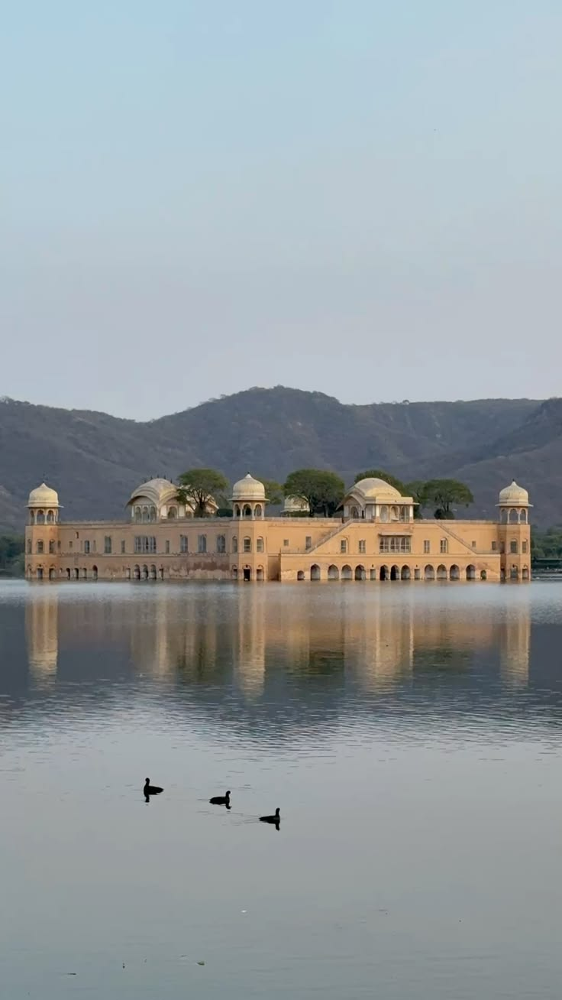
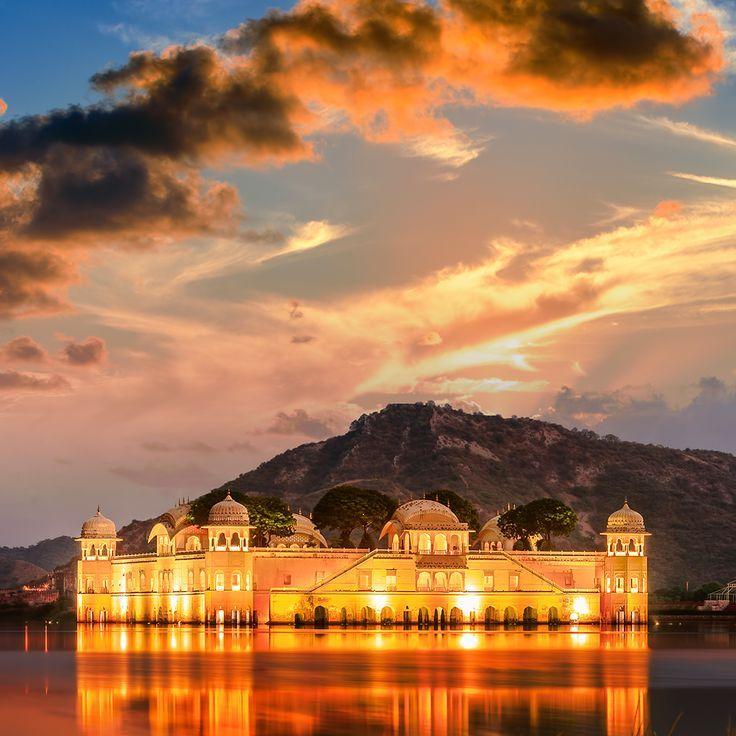

Jal Mahal
The palace in the lake
- Built
- 18th century
- Commissioned by
- Sawai Madho Singh I
- Location
- Man Sagar Lake
- Style
- Rajput with Mughal touches
- Storeys
- Five, four below water when the lake is full
- Best time
- Sunset

About Jal Mahal
Jal Mahal looks like it floats on Man Sagar Lake, with the Nahargarh hills behind it. When the lake is full, four of its five storeys sit under water and only the top floor and its chhatris show above the surface.
It was built as a pleasure palace and hunting lodge for the royal court. Today it is usually admired from the lakeside promenade, and its reflection at dusk is one of the most photographed views in Jaipur.
History
- Late 1500sA dam across the Darbhawati river creates Man Sagar Lake.
- 1700sMadho Singh I builds the lake palace; later rulers extend it.
- 2000sRestoration begins on the palace and the lake edge.
- TodayThe lake and its migratory birds are part of the city's conservation efforts.
Jal Mahal through the day

